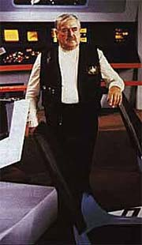
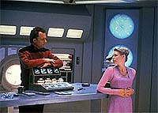
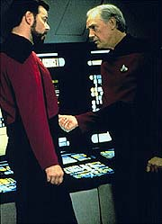
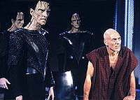
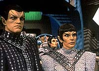
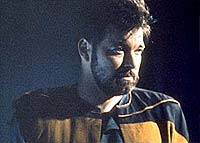

|
Reviravoltas
no incio do fim
 A
produo da sexta temporada da Nova Gerao foi marcada
por uma srie de mudanas. A principal foi a promoo de Jeri
Taylor ao posto de co-produtora executiva, uma vez que Rick Berman
e Michael Piller estavam aterefados com a criao de Deep
Space Nine. Com o afastamento de Piller, Taylor ficou
encarregada da tarefa de conduzir criativamente a srie. Houve
mudanas significativas tambm no restante da equipe. Ren
Echevarria e Naren Shankar foram includos na equipe de
roteiristas fixos da srie; vrios integrantes da equipe tcnica
foram relocados para trabalhar na produo de Deep Space Nine,
ocasionando uma srie de remanejamentos. A
produo da sexta temporada da Nova Gerao foi marcada
por uma srie de mudanas. A principal foi a promoo de Jeri
Taylor ao posto de co-produtora executiva, uma vez que Rick Berman
e Michael Piller estavam aterefados com a criao de Deep
Space Nine. Com o afastamento de Piller, Taylor ficou
encarregada da tarefa de conduzir criativamente a srie. Houve
mudanas significativas tambm no restante da equipe. Ren
Echevarria e Naren Shankar foram includos na equipe de
roteiristas fixos da srie; vrios integrantes da equipe tcnica
foram relocados para trabalhar na produo de Deep Space Nine,
ocasionando uma srie de remanejamentos.
O resultado de todas essas reviravoltas foi uma temporada
atribulada, com dois perodos distintos no que tange ao tipo de
histrias contadas, e uma grande experimentao por parte dos
roteiristas... experimentao que quase alterou profundamente
alguns dos personagens da srie. Mas vamos por partes.
Jeri
Taylor assumiu o comando da equipe sem saber ao certo os rumos que
a temporada tomaria. De incio, havia o problema de se encerrar a
trama iniciada em "Time's Arrow, Part I", na qual
a cabea de Data encontrada em uma caverna de So Francisco.
Histrias sobre viagem no tempo sempre acabam sendo confusas, e
muitos fs haviam manifestado essa confuso aps o trmino da
primeira parte.
Taylor tomou para si a responsabilidade de concluir a trama, com o
peso de fechar todas as pontas. Uma de suas escolhas foi tentar
eliminar a tecnobaboseira que caracterizou a primeira parte do
episdio, e se concentrar nos personagens. Em especial, no
relacionamento entre Guinan e Picard, que recebe uma explicao
surpreendente ao final do episdio.
 Aps
este episdio de estria, vieram uma srie de episdios
baseados em bizarrices pseudocientficas. "Realm of Fear"
mostra Reginald Barclay acreditando ter sido atacado por uma
criatura no teletransporte. Em "Man of the People"
um embaizador Lumeriano deposita em Deanna todas as suas emoes
negativas enquanto media uma disputa. "Relics"
uma pequena prola que mostra como Scotty da Srie Clssica
se manteve vivo com auxlio de um loop do teletransporte. "Schisms"
apresenta um novo sistema de anlise de Geordi que acaba
abduzindo os tripulantes, levando-os ao subespao, onde sofrem
experimentos de uma estranha espcie aliengena. "True
Q" marca a primeira presena de Q na temporada,
revelando que uma tripulante da nave na verdade integrante do Q
Continnuum. "Rascals" mostra Picard, Guinan, Ro e
Keiko se transformando em crianas aps um acidente em uma nave
auxiliar. "A Fistful of Datas" mais um episdio
da srie "Holodeck com defeitos". E "The
Quality of Life" mostra um experimento que leva Data a
concluir que se trata de uma nova forma de vida.
 Nessa
lista em que a tecnobaboseira atinge picos jamais atingidos
anteriormente, h altos e baixos. "Relics" se
destaca, mostrando o retorno de Scotty de uma forma singela, e que
agradou em cheio os fs. "True Q", apesar de no
ser uma participao to notvel de Q, se enquadra entre os
melhores da temporada, de certa forma revendo com mais sucesso a
premissa j explorada no episdio na primeira temporada "Hide
and Q".
Mas, s. Os demais episdios, destes nove primeiros, acabam
se enquadrando entre os piores da temporada. "Man of the
People" com certeza o pior de todos.
 Tudo
comeou a mudar com a produo do episdio em duas partes "Chain
of Command", no qual Picard, ao longo de uma misso
secreta em territrio Cardassiano, capturado e torturado,
enquanto a Enterprise colocada sob o comando de outro capito.
Praticamente tudo funciona no episdio, que abandona quase que
totalmente a tecnobaboseira. A dinmica entre os personagens
perfeita. Ronny Cox como o capito Jellico, que assume o comando
da nave quando Picard parte para sua misso, est incrvel no
papel, e seu personagem gera uma srie de conflitos na nave,
principalmente por seguir uma conduta muito distinta da de Picard.
E a dinmica entre Picard e David Warner (no papel de Gul Madred,
o carrasco de Picard) empolgante. Mais do que isso, o episdios
aborda um tema srio, a tortura, sob um enfoque bem diferente da
postura herica observada em muitos filmes, e a experincia
marca Picard de forma mais intensa que o normal, dosando toda sua
postura com relao aos Cardassianos no decorrer da srie
(incluindo sua participao no episdio piloto de DS9).
 A
partir de "Chain of Command", a srie comea a
buscar novos rumos. Umas das causas que a dinmica de Jeri
Taylor com os roteiristas bem distinta da que havia com Piller.
Enquanto Piller toma as rdeas e determina o curso dos episdios,
Taylor d mais especo para a equipe encontrar por si s as solues.
Essa dinmica acaba por permitir que os roteiristas sintam-se
livres para buscar novos rumos criativos.
Essa alternativa rendeu alguns momentos memorveis na temporada,
ainda que no tenha produzido nenhuma obra-prima como "The
Inner Light", da temporada anterior. O melhor exemplo "Tapestry",
uma pequena obra-prima na qual Q da a Picard a chance de reviver
toda a sua vida, "mandando-o" de volta aos seus anos de
Academia. Melhor episdio da temporada, e est entre os melhores
de toda a srie.
Outro bom exemplo "Ship in a Bottle", que traz
de volta o professor Moriarty, que havia sido criado pelo
computador da nave no episdio da segunda temporada "Elementary,
Dear Data". timo desenvolvimento de personagens, e de
certa forma compensa a participao de Barclay em um episdio
mais digno que "Realm of Fear". Talvez o grande
defeito do episdio seja omitir qualquer citao dra.
Pulaski, que havia participado do primeiro episdio com Moriarty
de forma marcante.
 Um
episdio que marca bem as diferenas criativas nesta temporada
"Face of the Enemy", no qual Deanna acorda em
uma nave Romulana, e descobre ter sido alterada cirurgicamente
para se parecer com seus colegas de nave, de modo a tomar parte em
uma conspirao do Tal Shiar, a fora de segurana Romulana.
tima interpretao de Marina Sirtis como uma oficial ao estilo
Gestapo, provavelmente sua melhor em toda a srie.
Nem tudo so flores, porm. Apesar da nova abordagem, alguns
acidentes de percurso aconteceram. "Aquiel", por
exemplo, um dos piores da temporada, no qual Geordi acaba se
apaixonando pela principal suspeita de um assassinato. O que
poderia ser a grande chance de vermos Geordi em uma histria romntica
sria decepciona pelas solues encontradas e pelo uso de
tecnobaboseira. Outro exemplo "Suspicions", no
qual a dra. Crusher coloca sua carreira em risco ao tentar limpar
o nome de um cientista Ferengi assassinado, cuja inveno
poderia permitir que naves atravessassem a coroa solar.
 Esta
tendncia em buscar novos rumos para a srie colocou em risco
dois personagens queridos do pblico. O primeiro, Geordi,
descobria que na verdade meio-aliengena. Essa histria,
felizmente, nem chegou a ser filmada. Sorte pior teria Riker, que
descobiu possuir um alter-ego criado em um defeito do
teletransporte, e que ficara preso em um planeta por oito anos. O
episdio em si no ruim, mas a idia original era matar o
comandante Riker, mantendo vivo --e como parte da tripulao--
seu alter ego, o tenente Riker. Felizmente isso no foi feito.
No todo, a sexta temporada da Nova Gerao marca uma
tentativa de se recriar a srie, mudando a dinmica dos episdios,
com sucesso limitado. A tecnobaboseira foi usada ao extremo,
apesar das tentativas iniciais de Taylor, e os conceitos baseados
em "bizarrices cientficas" surgiram mais do que o
desejvel. Uma temporada um pouco confusa, com momentos
brilhantes e terrveis decepes.
NO PERCAM: "Tapestry", "Relics",
"Chain of Command, Parts I & II", "Face
of the Enemy".
ESQUECVEIS: "Man of the People", "Rascals",
"Suspicions", "Aquiel"
A TEMPORADA, EPISDIO A EPISDIO
01 - Time's Arrow, Part II - A tripulao investiga a
influncia de uma raa aliengena no sculo XIX. Nota: 3,5
02 - Realm of Fear - Barclay acredita ter sido atacado por
uma criatura durante o teletransporte. Nota: 4.5
03 - Man of the People - um embaizador Lumeriano deposita
em Deanna todas as suas emoes negativas enquanto media uma
disputa. Nota: 0.0
04 - Relics - A tripulao da Enterprise encontra Scotty,
mantido vivo em um loop do teletransporte de uma nave acidentada. Nota:
10.0
05 - Schisms - A tripulao abduzida para o subespao,
onde sofrem bizarras experincias. Nota: 4.5
06 - True Q - Q volta Enterprise quando uma jovem estagiria
comea a desenvolver poderes similares aos seus. Nota: 8.0
07 - Rascals - Picard, Guinan, Ro e Keikon so
transformados em crianas por um acidente na nave auxiliar. Nota:
2.0
08 - A Fistful of Datas - Worf e seu filho, Alexander, se vem
presos no holodeck durante uma recriao do velho oeste, tendo
de enfrentar viles que se assemelham fisicamente e possuem as
habilidades de Data. Nota: 6.0
09 - The Quality of Life - Data acredita que o Exocomp, crebro
eletrnico com capacidade de aprendizagem, um ser vivo, e se
recusa a utiliza-lo. Nota: 7.0
10 - Chain of Command, Part I - Picard substitudo no
comando da Enterprise, de modo a liderar uma misso secreta em
territrio Cardassiano. Nota: 9.0
11 - Chain of Command, Part II - Picard preso e
torturado pelos Cardassianos, enquanto Riker tenta impedir que a
Federao declare guerra Cardssia. Nota: 10.0
12 - Ship in a Bottle - Barclay acidentalmente aciona o
programa de Moriarty no Holodeck, e este coloca a nave em perigo. Nota:
9.5
13 - Aquiel - Geordi se apaixona pela principal suspeita de
um assassinato. Nota: 1.0
14 - Face of the Enemy - Deanna acorda em uma nave romulada,
e descobre ter sido alterada cirurgicamente para se parecer com
uma Romulana, de modo a tomar parte em uma conspirao do Tal
Shiar, a fora de segurana Romulana. Nota: 9.5
15 - Tapestry - Q da a Picard a chance de reviver toda a
sua vida, "mandando-o" de volta aos seus anos de
academia. Nota: 10.0
16 - Birthright, Part I - Em uma visita Deep Space Nine,
Worf descobre que seu pai ainda est vivo, sendo mantido preso em
uma priso romulana secreta. Nota: 8.0
17 - Birthright, Part II - Worf preso por romulanos, e
descobre porque os outros presos no tentaram fugir
anteriormente. Nota: 3.5
18 - Starship Mine - Durante uma evacuao da nave para
manuteno, Picard descobre que terroristas pretendem destruir a
nave. Nota: 6.0
19 - Lessons - Picard se v em uma situao onde
obrigado a decidir se envia a mulher que ama para uma misso de
alto risco. Nota: 9.0
20 - The Chase - O velho professor de arqueologia de Picard
morto, e a tripulao tenta concluir seu trabalho, at
surgirem Klingons, Romulanos e Cardassianos. Nota: 6.5
21 - Frame of Mind - Riker comea a char que est louco,
quando v sua realidade se alternar entre um hospcio aliengena
e uma pea que est representando com a tripulao. Nota:
9.0
22 - Suspicions - Dra. Crusher coloca sua carreira em risco
ao tentar limpar o nome de um cientista Ferengi assassinado cuja
inveno poderia permitir que naves atravessassem a coroa solar.
Nota: 2.0
23 - Rightful Heir - Worf comea a questionar sua f
quando Kahless resurge dos mortos para liderar o imprio. Nota:
8.0
24 - Second Chances - Riker descobre que, h 8 anos, uma cpia
de si foi criada em um acidente do teletransporte. Nota: 8.5
25 - Timescape - Picard, Troi, Geordi e Data, ao voltar de
uma conferncia na Federao, encontram a Enterprise congelada
no tempo, sob ataque de uma ave-de-guerra Romulana. Nota: 8.0
26 - Descent, Part I - Os Borgs ressurgem sob o comando de
Lore. Nota: 9.0
Fernando
Rodrigues editor do boletim Base News e escreve regularmente
sobre a Nova Gerao para o Trek Brasilis
|